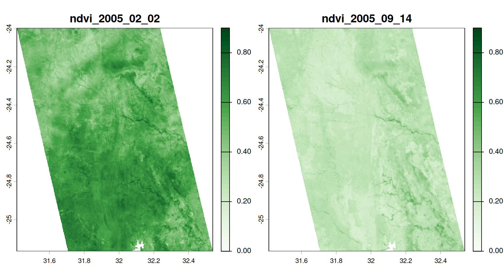
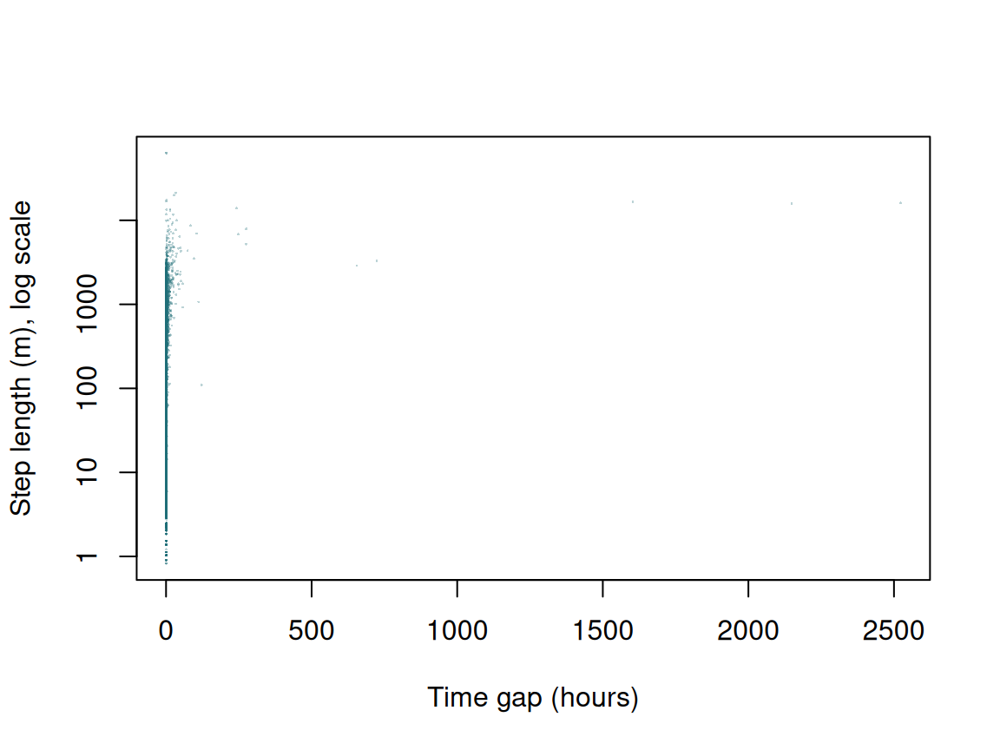
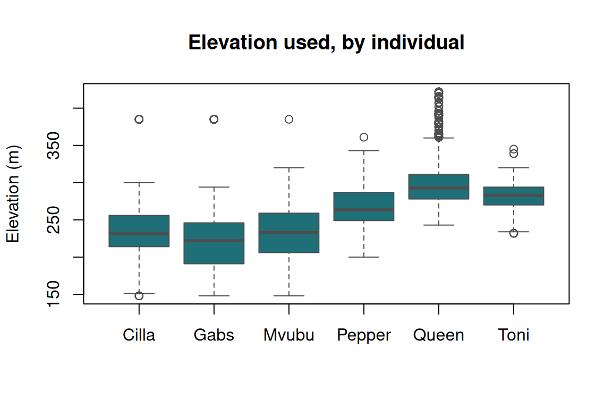
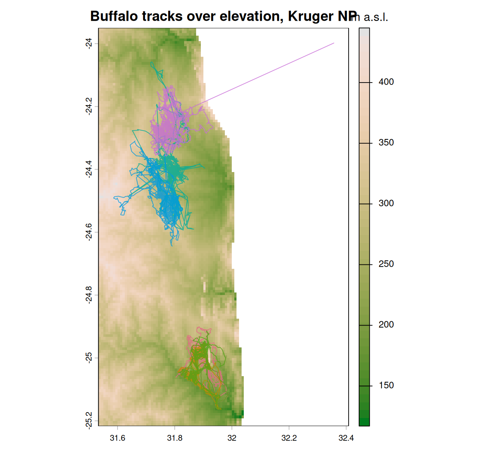

Exercise 2 — sf, terra and coordinate reference systems
Class 2 · Theme 2
Goals. Build an sf object from a CSV; reproject it; measure distances correctly (and incorrectly, so you can see the difference); read a real raster and sample it at your fixes; make an undistorted map.
Time: ~50 minutes. Packages: sf, terra, dplyr.
Task 1 — From data frame to sf
buffalo <- read.csv("data/buffalo_kruger.csv.gz") |>
transmute(
id = individual.local.identifier,
t = as.POSIXct(timestamp, tz = "UTC"),
lon = location.long,
lat = location.lat
) |>
filter(!is.na(lon), !is.na(lat)) |>
distinct(id, t, .keep_all = TRUE) |>
arrange(id, t)
nrow(buffalo)
#> [1] 24663
buf_sf <- st_as_sf(buffalo, coords = c("lon", "lat"), crs = 4326, remove = FALSE)
buf_sf
#> Simple feature collection with 24663 features and 4 fields
#> Geometry type: POINT
#> Dimension: XY
#> Bounding box: xmin: 31.58639 ymin: -25.16421 xmax: 32.35671 ymax: -23.99802
#> Geodetic CRS: WGS 84
#> First 10 features:
#> id t lon lat geometry
#> 1 Cilla 2005-07-14 04:35:00 31.80449 -25.06147 POINT (31.80449 -25.06147)
#> 2 Cilla 2005-07-14 05:35:00 31.88776 -24.96738 POINT (31.88776 -24.96738)
#> 3 Cilla 2005-07-14 07:35:00 31.85942 -24.94288 POINT (31.85942 -24.94288)
#> 4 Cilla 2005-07-14 08:34:00 31.85512 -24.94914 POINT (31.85512 -24.94914)
#> 5 Cilla 2005-07-14 09:35:00 31.85694 -24.95424 POINT (31.85694 -24.95424)
#> 6 Cilla 2005-07-14 10:35:00 31.85977 -24.94735 POINT (31.85977 -24.94735)
#> 7 Cilla 2005-07-14 11:34:00 31.84466 -24.93435 POINT (31.84466 -24.93435)
#> 8 Cilla 2005-07-14 12:35:00 31.84410 -24.93400 POINT (31.8441 -24.934)
#> 9 Cilla 2005-07-14 13:34:00 31.84463 -24.93442 POINT (31.84463 -24.93442)
#> 10 Cilla 2005-07-14 14:35:00 31.85700 -24.93371 POINT (31.857 -24.93371)remove = FALSE keeps the original lon/lat columns. Handy — you often want the plain numbers alongside the geometry.
Your turn
1a. What does st_crs(buf_sf) report? Find the EPSG code and the units. 1b. What is the bounding box?
st_crs(buf_sf)$epsg
#> [1] 4326
st_crs(buf_sf)$units_gdal
#> [1] "degree"
st_is_longlat(buf_sf)
#> [1] TRUE
st_bbox(buf_sf)
#> xmin ymin xmax ymax
#> 31.58639 -25.16421 32.35671 -23.99802Degrees, EPSG:4326, and st_is_longlat() is TRUE — the flag that should make you stop before computing any distance or area.
Task 2 — Reproject, and watch the numbers change
Kruger sits in UTM zone 36S, EPSG:32736.
buf_utm <- st_transform(buf_sf, 32736)
# Same animal, same fix, different numbers
st_coordinates(buf_sf)[1, ]
#> X Y
#> 31.80449 -25.06147
st_coordinates(buf_utm)[1, ]
#> X Y
#> 379415.9 7227712.7zone = floor((longitude + 180) / 6) + 1. Kruger is at ~31.8°E, so floor(211.8 / 6) + 1 = 36. Southern hemisphere → EPSG 327 + zone = 32736. Northern would be 326 + zone.
Your turn
2a. Confirm the round trip: transform back to 4326 and compare to the original.
back <- st_transform(buf_utm, 4326)
max(abs(st_coordinates(back) - st_coordinates(buf_sf)))
#> [1] 1.776357e-14Agreement to ~1e-9 degrees — about 0.1 mm. Reprojection is lossless up to floating-point precision; it is not a source of error you need to worry about.
Task 3 — Three ways to measure one distance
Take the first two fixes of buffalo “Queen” and measure the step three ways.
queen <- buf_sf |> filter(id == "Queen") |> slice(1:2)
# (1) WRONG — Euclidean on degrees, pretending they are metres
xy <- st_coordinates(queen)
wrong <- sqrt(diff(xy[, 1])^2 + diff(xy[, 2])^2)
wrong
#> [1] 0.002835514
# (2) Geodesic on the ellipsoid — sf does this automatically for 4326
geodesic <- st_distance(queen[1, ], queen[2, ])
geodesic
#> Units: [m]
#> [,1]
#> [1,] 301.4658
# (3) Euclidean in projected metres
queen_utm <- st_transform(queen, 32736)
projected <- st_distance(queen_utm[1, ], queen_utm[2, ])
projected
#> Units: [m]
#> [,1]
#> [1,] 300.9957Your turn
3a. Explain the three numbers. 3b. How big is the disagreement between (2) and (3), in relative terms?
c(wrong_degrees = as.numeric(wrong),
geodesic_m = as.numeric(geodesic),
projected_m = as.numeric(projected))
#> wrong_degrees geodesic_m projected_m
#> 2.835514e-03 3.014658e+02 3.009957e+02
# Relative difference between the two *correct* methods
abs(as.numeric(geodesic) - as.numeric(projected)) / as.numeric(geodesic)
#> [1] 0.001559558Number (1) is in degrees and is not a distance at all — it is a dimensionless mix of two different angular units. It is small not because the animal barely moved, but because degrees are big.
Numbers (2) and (3) are both in metres and agree to a small fraction of a percent. That is UTM doing its job: inside one zone, distortion is under 0.1%.
Practical rule. For distances, either is fine inside a zone. But for kernel density, step-length distributions, buffers and anything involving area, project first — those methods assume a plane.
Task 4 — Scale up: all steps for all animals
step_lengths <- buf_utm |>
group_by(id) |>
arrange(t, .by_group = TRUE) |>
mutate(
sl = as.numeric(st_distance(geometry, lag(geometry), by_element = TRUE)),
dt = as.numeric(difftime(t, lag(t), units = "hours"))
) |>
ungroup() |>
st_drop_geometry() |>
filter(!is.na(sl))
summary(step_lengths$sl)
#> Min. 1st Qu. Median Mean 3rd Qu. Max.
#> 0.00 28.54 153.92 330.34 399.99 63102.52Your turn
4a. What is the median step length per individual? 4b. Plot the distribution of step lengths. Why the long tail?
step_lengths |>
group_by(id) |>
summarise(n = n(), median_sl = median(sl), max_sl = max(sl), .groups = "drop")
#> # A tibble: 6 × 4
#> id n median_sl max_sl
#> <chr> <int> <dbl> <dbl>
#> 1 Cilla 3527 149. 13386.
#> 2 Gabs 3669 107. 6112.
#> 3 Mvubu 2571 127. 6114.
#> 4 Pepper 4570 181. 21244.
#> 5 Queen 4544 171. 16082.
#> 6 Toni 5776 174. 63103.
Two things produce the tail. First, genuine long movements. Second — and this is the important one — steps separated by long time gaps. A “step” across a 12-hour gap is not comparable to a step across one hour.
plot(step_lengths$dt, step_lengths$sl, pch = 16, cex = 0.2,
col = adjustcolor("#1f6f78", 0.3), log = "y",
xlab = "Time gap (hours)", ylab = "Step length (m), log scale")
Step length is meaningless without its time interval. This is why Class 3 resamples tracks to a regular interval before computing anything.
Task 5 — A real raster
We use SRTM-derived elevation for the Kruger area, already cropped for you.
elev <- rast("data/kruger_elevation.tif")
elev
#> class : SpatRaster
#> size : 168, 132, 1 (nrow, ncol, nlyr)
#> resolution : 0.008333333, 0.008333333 (x, y)
#> extent : 31.4, 32.5, -25.3, -23.9 (xmin, xmax, ymin, ymax)
#> coord. ref. : lon/lat WGS 84 (EPSG:4326)
#> source : kruger_elevation.tif
#> name : elevation
#> min value : 117
#> max value : 572Your turn
5a. What is the resolution, in degrees and roughly in metres? 5b. Extract elevation at every buffalo fix. What is the range?
30 arc-seconds ≈ 900 m. The raster is in EPSG:4326, the same CRS as buf_sf — so we extract with the geographic version, not the UTM one.
boxplot(elevation ~ id, data = st_drop_geometry(buf_sf),
col = "#1f6f78", border = "grey30",
xlab = "", ylab = "Elevation (m)",
main = "Elevation used, by individual")
Individuals occupy noticeably different elevation bands — a first hint that they are not interchangeable, and a preview of Class 7.
Task 6 — Deliberately break it
Do this on purpose, once, so you recognise the symptom for the rest of your career.
elev_utm <- project(elev, "EPSG:32736")First, the good news. Both objects carry a CRS, so terra sorts it out itself — note the warning it prints:
Now the bad news. Strip the coordinates down to a bare matrix and the CRS goes with them:
xy <- st_coordinates(buf_sf) # just numbers — no CRS attached
bad <- terra::extract(elev_utm, xy)
mean(is.na(bad[, 1]))
#> [1] 1Every value is NA. No error, no warning — just a column of missing data that would quietly propagate into your model.
Your turn
6a. Explain why. 6b. Find the second way to produce the same failure.
A matrix has no CRS, so terra can only assume the numbers are already in the raster’s coordinate system. It reads longitude 31.8 as 31.8 metres east of the UTM 36S origin — a point in the Gulf of Guinea, far outside the extent:
The second route to the same failure is an object whose CRS is undefined:
Now terra has nothing to transform to, so it assumes agreement — and fails the same silent way.
-
Keep coordinates inside objects that carry a CRS (
sf,SpatVector). Do not pass bare matrices around. - When
terraprintstransforming vector data to the CRS of the raster, that is not noise — it is telling you your inputs disagreed. Read it. - Before every
extract(), ten seconds of checking:
Task 7 — A map that is not distorted
elev_crop <- crop(elev, ext(st_bbox(buf_sf)) + 0.05)
plot(elev_crop, col = hcl.colors(50, "Terrain2"),
main = "Buffalo tracks over elevation, Kruger NP",
plg = list(title = "m a.s.l."))
ids <- unique(buf_sf$id)
cols <- hcl.colors(length(ids), "Dark 3")
for (i in seq_along(ids)) {
d <- buf_sf[buf_sf$id == ids[i], ]
lines(st_coordinates(d), col = adjustcolor(cols[i], 0.8), lwd = 1)
}
legend("topright", legend = ids, col = cols, lwd = 2, bty = "n", cex = 0.75)
terra::plot() reads the CRS and, for geographic coordinates, sets the aspect ratio to 1/cos(latitude) so that a kilometre east looks like a kilometre north. Compare with last week’s plot(..., asp = 1), which did not.
You can check what it used:
Your turn
7a. Save the buffalo points as a GeoPackage and read them back.
Use GeoPackage (.gpkg), not shapefile. Shapefiles truncate column names to 10 characters, cannot store POSIXct properly, are limited to 2 GB, and are actually 4+ files that people lose track of. GeoPackage is one file, one standard, no surprises.
Self-check
st_crs(x) <- 32736 on an object whose coordinates are longitude/latitude. What have you done?
Assigning a CRS only writes a label. The numbers 31.8 and −24.5 are now interpreted as 31.8 m east and 24.5 m south of the UTM 36S origin — a point in the Atlantic off West Africa.
It fails silently, which is what makes it dangerous. st_transform() is the function that changes coordinates.
Which CRS would you use to compute home-range areas for Leo the vulture, whose track spans 7°N to 54°N and 108°W to 68°W?
A single UTM zone is 6° wide; Leo spans about 40° of longitude, so distortion far from zone 13 is severe. Web Mercator is conformal and not equal-area — areas at 54°N are inflated by roughly a factor of three relative to the equator, so it is the worst possible choice for comparing areas.
The right answers are an equal-area CRS covering the Americas, or — better — to segment first (Class 6) and estimate separate ranges for the breeding and wintering areas, each in its own local projection. A single range for this animal is not a meaningful quantity, whatever CRS you use.
sf does compute geodesic areas on 4326, but kernel density estimators need projected coordinates regardless.
Before Class 3
- Check
library(move2),library(amt)andlibrary(mapview)all load. - Try
mapview::mapview(buf_sf)— an interactive map in one line.